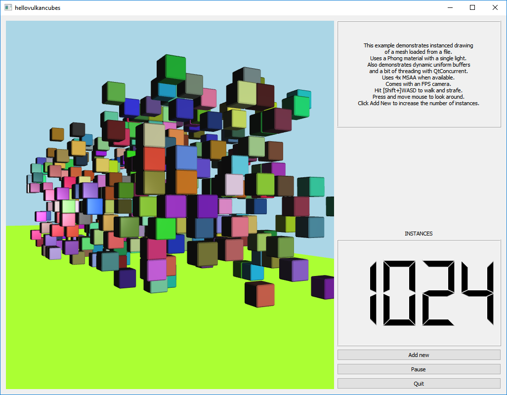

Hello Vulkan Cubes Example
Shows the basics of using QVulkanWindow.
The Hello Vulkan Cubes Example shows more advanced usage of QVulkanWindow.

In this example there is a mesh loaded from a file and two different materials and corresponding graphics pipelines. The rounded cubes are drawn using instancing and feature a Phong lighting model with a single directional light.
Unlike hellovulkantexture and hellovulkantriangle, the uniform buffer handling takes an alternative approach here: dynamic uniform buffers are used instead of multiple descriptor sets.
The example requires QtConcurrent since it demonstrates simple usage of QtConcurrent::run(), QFuture, and QFutureWatcher in combination of QVulkanWindow. Mesh and shader data loading, the potentially expensive graphics pipeline construction, and the building of the frame command buffer are all done in separate worker threads.
The scene is embedded into a widget-based user interface. The QVulkanWindow subclass handles mouse and keyboard input as well since it provides a first-person style camera in order to allow moving around in the scene.
Running the Example
To run the example from Qt Creator, open the Welcome mode and select the example from Examples. For more information, visit Building and Running an Example.